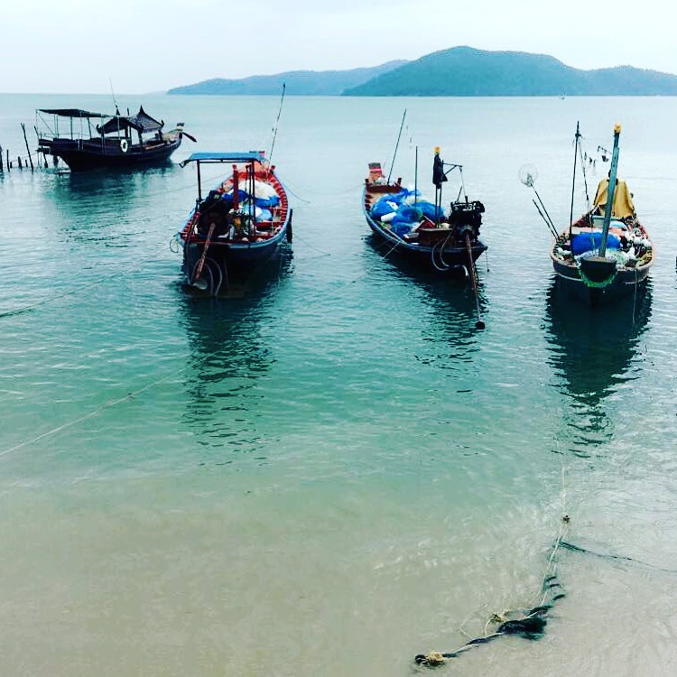
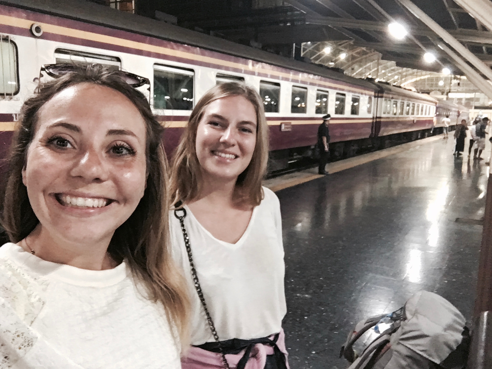

Ko Samui, Koh Samui or simply Samui is an island in the Gulf of Thailand located in the southern part of the isthmus of Kra and belongs to the province of Surat Thani.
With Pattaya, Koh Samui is one of Thailand's most popular seaside destinations and one that has experienced the greatest development. Huge stretches of beaches dotted with small bamboo guesthouses for backpackers have finally given way to hotel chains and tourist facilities.
The train is the cheapest way to travel to Thailand. The 3rd class tickets are really expensive and the atmosphere on board is amazing! On the other hand, the trains are slow.